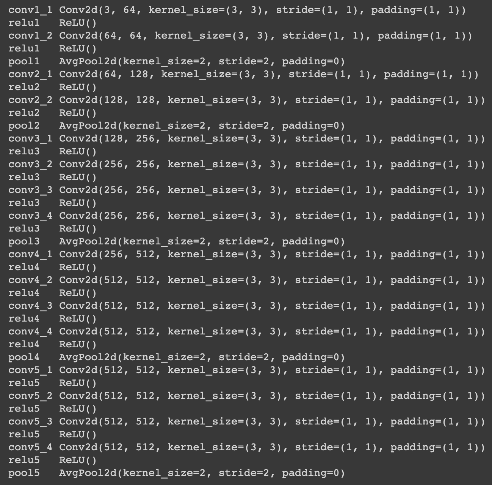

By: Adel Setoodehnia and Matthew Owen
Neural Style Transfer
Introduction
Here's a quote from the abstract of the paper A Neural Algorithm of Artistic Style by Gatys et al.
The idea presented by the above paper, is an artificial system based on a Deep Neural Network that does just that. It separates and then recombines the content and style of two arbitrary images, creating a whole brand new work of art!In fine art, especially painting, humans have mastered the skill to create unique visual experiences through composing a complex interplay between the content and style of an image.
Algorithm
The main idea of the algorithm is actually quite simple! Let's image that we have two different baselines: a content representation of our goal, and a style representation of our goal. Given these two, our algorithm just continues to alter the pixel values of our image while minimizing the loss according to the baseline content representation and the loss according to the basline style representation. In order to actually accomplish this, we need to find a way to get a baseline first!
Content and Style Representations
Here we utilize the idea that when Convolutional Neural Networks are trained on object recognition, they develop a very good representation of the image. By leveraging a CNN that has been trained on a large image set, we can feed in a content and style image and extract features along the way that give us the content and style representations we are looking for!
Higher layers in the network capture the high-level content in terms of objects and their arrangement in the input image but do not constrain the exact pixel values of the reconstruction. We therefore refer to the feature responses in higher layers of the network as the content representation. To obtain a representation of the style of an input image, we use a feature space that consists of the correlations between the different filter responses over the spatial extent of the feature maps. By including the feature correlations of multiple layers, we obtain a stationary, multi-scale representation of the input image, which captures its texture information but not the global arrangement. We refer to this multi-scale representation as style representation.
Model Architecture
As suggested in the paper, we use a pretrained VGG-19 network with average pooling instead of max pooling and without any of the fully connected layers for the CNN referred to above. The architecure can be seen below.
Loss Functions
Now we are in dire need of a way to quantify the losses we mentioned earlier. As definied in the paper, we have the following equation for content loss:
$$\mathcal{L}_{content}(\vec{p}, \vec{x}, l) = \frac{1}{2} \sum_{i, j}(F^{l}_{ij} - P^{l}_{ij})^{2}$$
where we let \(\vec{p}\) and \(\vec{x}\) be the original image and the image that is being generated and \(P^{l}\) and \(F^{l}\) be their feature representations extracted from layer \(l\) from the model. Now, for style loss, we have a few more moving parts. First we need the measure of the correlations between the different filter responses which is given by the Gram matrix \(G^l\in\mathbb{R}^{N_l\times N_l}\) such that
$$G_{ij}^{l} = \sum_{k}F_{ik}^{l} F_{jk}^l.$$
Now we let \(\vec{a}\) and \(\vec{x}\) be the original image and the image that is being generated and \(A^{l}\) and \(G^{l}\) be
their style representations extracted from layer \(l\) from the model. We now have the following:
$$E_{l} = \frac{1}{4 N_{l}^2 M_{l}^2} \sum_{ij}(G_{ij}^{l} - A_{ij}^l)^{2}$$
$$\mathcal{L}_{style}(\vec{a}, \vec{x}) = \sum_{l=0}^{L} w_{l} E_{l}.$$
Given these equations, we then define a total loss function,
$$\mathcal{L}_{total}(\vec{p}, \vec{a}, \vec{x}) = \alpha \mathcal{L}_{content}(\vec{p}, \vec{x}) +
\beta\mathcal{L}_{style}(\vec{a}, \vec{x})$$
where \(\alpha\) and \(\beta\) are the weighting factors for content and style reconstruction respectively. We matched the content representation on layer conv4_1, and the
style representations on layers conv1_1, conv2_1, conv3_1, conv4_1, and conv5_1 (\(w_l =
1/5\) in those layers, \(w_l = 0\) in all other layers) .
Training
Now we can just use gradient descent to minimize the above loss function and find the optimal pixel values for our generated image. We used the L-BFGS algorithm for our optimizer and trained for \(500\) epochs. We left the \(\alpha=1\) and changed \(\beta\) accordingly to gain more or less of weight on the style loss.
Results
Neckarfront


Yosemite


Avenue of the Giants

Campanile


Failure

I suspect this case fails because there aren't very many distinguishable features in the image like nice strong edges, and thus the entire background of the mountainside becomes one incomprehensible wave of white, and the trees are the only things that end up looking like waves.
Seam Carving
Introduction
This project was a fun blast to the past when we was in CS 61B and we did the seam carving homework. For this project, we reimplemented all of the code from scratch in python. Our implementation was still inspired by the spec from CS61B.
Algorithm
Energy
For the computation of the energy, we used the dual gradient energy function as suggested in the CS 61B assignment. This computes the energy of a given pixel as: $$E(x, y) = \Delta_x^2(x, y) + \Delta_y^2(x, y)$$ where \(\Delta_x^2(x, y)\) and \(\Delta_x^2(x, y)\) are defined as: $$\Delta_x^2(x, y) = (R[x+1][y] - R[x-1][y])^2 + (G[x+1][y] - G[x-1][y])^2 + (B[x+1][y] - B[x-1][y])^2$$ $$\Delta_y^2(x, y) = (R[x][y+1] - R[x][y-1])^2 + (G[x][y+1] - G[x][y-1])^2 + (B[x][y+1] - B[x][y-1])^2$$ and \(R\), \(G\) and \(B\) are the red, green, and blue channels respectively. This energy function is fairly simple to compute using numpy functions and also performs quite well. Below you can see some examples of what this image looks like for various images.
Seam
A seam is any contiguous vertical or horizontal set of pixels through an image. A given seam can only differ by -1, 0, or 1 pixels from one row / column to the next if you are identifying either horizontal or vertical seams. Simply put when we are trying to do seam carving we would like to remove the lowest energy seams as specified below. If we say that the cost of the minimum energy path that ends at \((i,j)\) is \(M(i,j)\) and the energy cost (as specified by our energy function above) at a pixel location \((i,j)\) is \(e(i,j)\) then we can define \(M(i,j)\) as follows. $$M(i, j) = e(i, j) + min(M(i - 1, j - 1), M(i, j - 1), M(i + 1, j - 1))$$ We want to remove the seam whose value is the smallest in the last row / column of the image. Our problem here is defined for the vertical seam case and we will handle the horizontal seam case by first transposing the image and then using the same code.
The final step in our algorithm will be to actually remove the seam from the image. We will then be able to repeatedly apply our seam removal algorithm to resize images in a content aware fashion. In order to do this we can use the power of numpy's magic indexing! Now we can see some results.
Results
Working Examples
The examples that we found worked best were examples that seemed to be more textural and had fewer well defined shapes crossing the entire images. Those images would take on noticeable artifacts when parts of them were removed. Another type of image that worked pretty well were images which had a lot of dead low energy space. When these images were seam carved, those regions were mostly removed while the rest of the image remained intact. This overall changed the look of the image unlike the patterned / textured images but the results were still passable.
Sunset 1


Sunset 2


Concert


Crater Lake


City


Oregon


Ice


Failures
Opposite to the working examples, those that failed often had large defining shapes that went through the entire shape or had lots of straight lines. When you remove some seams out of either of these you end up with shapes that no longer are regular and often have very jagged edges. Also faces do not always fair well in seam carving if you are forced to remove seams that go through faces. As with the shapes, this leads to disproportionate facial features and other irregularities. See some of the below examples which highlight when seam carving alone might not be the best choice.
Chicken


Kimono


Brooklyn


Oregon

Light Fields
Introduction
As this paper by Ng et al. (Ren Ng is the founder of the Lytro camera and a Professor at Berkeley!) demonstrated, capturing multiple images over a plane orthogonal to the optical axis enables achieving complex effects (see this gallery - hover around different part of images) using very simple operations like shifting and averaging. The goal of this project is to reproduce some of these effects using real lightfield data.
Algorithm
Light field imaging is a relatively more simple process than what we needed to do for seam carving. The setup for this is that instead of taking a single exposure of a scene from a fixed point, we should instead take several photographs of a scene from differing positions (typically done in a grid pattern). The additional exposures of the scene give us more information which in turn allows us to create fun effects like refocusing of the image at different points as well as effects on the aperature.
Data
The datasets that we used were from the Stanford Light Field Archive and are composed of 289 images for each scene. The images comprise a \(17\times17\) grid of images translated into different postions. If we simply average all of these images the result is that the features that are further from the camera and move less from shot to shot remain focused while those that are in the foreground of the image and move relatively more become quite blurry.
We can go even further than this, by chosing to shift the images differing amounts before averaging them together. For our code we would shift the image by some constant multple \(c\) times the appropriate offset. The appropriate offset essentially just means that we should shift images proportional to that of the offset from the center of the grid. The center of our grid would be the image at position \((8,8)\) in the grid so we would first calculate the offset from this center image and then shift it by \(c\) times the appropriate offset in each axis.
Implementation
In order to implement this code, we started off by trying to use scipy.ndimage.shift, but we found that
this resulted in code which was still quite slow. Instead of relying on this library function, we rewrote our code
to use numba JIT compilation resulting in a 50x+ speedup. The runtime to generate a single refocuses imaged dropped
from 8-10 minutes to roughly 10 seconds. This allowed us to generate significatnly more images and also to try
different values of \(c\).
The aperature adjustment part of the project did not involve shifting the images of the dataset, but instead averaging differnt samples of the dataset. The samples that we used were concentric circles around the center image. The more images that are samples the lower the aperture appears and the shallower the depth of field becomes. By simply varying the number of images, this effect can be achieved. Below there are results of both of these operations which showcase how playing around with light field datasets can have varying effects.
Refocusing GIFs
Chess
Here we vary the value of \(c\) from -6 to 1. There are 30 individual frames. In order to see the original frames, you can run the provided code which will generate all 30 of the frames used in this GIF.

Marble
Here we vary the value of \(c\) from -4 to 4. There are 30 individual frames. In order to see the original frames, you can run the provided code which will generate all 30 of the frames used in this GIF.

Aperture Adjustment
Again here we use the center images with increasing radii. We start by just using the center images and then work our way up to using all 289 images (i.e. first image uses only center image, next image uses center 9 images, next uses center 25 images, etc.) The results can be seen below for the two examples of our choosing.
Chess


Marble